Présentation du projet aux élèves
Dans le cadre de la fête de la science 2010 la classe est inscrite au projet science de la circonscription de Marcq en Baroeul - La Madeleine.
Une exposition aura lieu en novembre 2010 au lycée automobile Alfred Mongy à Marcq en Baroeul .
Le projet consiste à concevoir, inventer et réaliser des machines sonores, des machines qui font du bruit...
1° approche et mise en garde:
il ne s'agit pas de reproduire des choses qui existent déjà. Nous devons inventer des machines personnelles et réfléchir aux mécanismes qui les animent dans une démarche scientifique.
Démarrage du projet
Chaque élève doit inventer et dessiner une machine au crayon gris sur une feuille A4
analyse des premiers dessins: on retient 4 dessins originaux.
Les autres sont rejetés car soit ils n'ont pas de rapport avec le projet ou ils présentent une machine qui existe déjà comme un robot qui fait des jus d'orange ou une voiture téléguidée.
On devra s'efforcer de construire des machines originales!
Mais d'abord c'est quoi une machine?
C'est un appareil qui sert à faire quelque chose (machine à laver, aspirateur, un lave-vaisselle...)
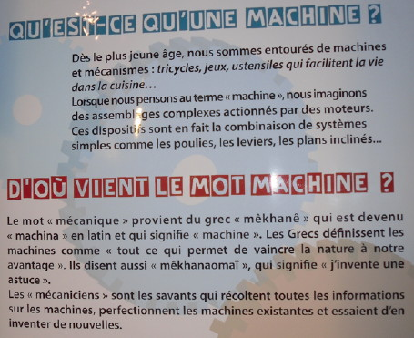 |
L'île aux machines (Lambersart) |
Une machine peut être fixe (machine-outil, machine à laver…) ou mobile (locomotive, tondeuse à gazon…).
Comment définir le bruit?
C'est des sons! Ca peut être du boucan, du brouhaha, du tintamare, la cacophonie....ceux sont des synonymes! Il y aussi des sons que l'on n'entend pas comme les ultrasons.
"Le son est une sensation auditive créée par un mouvement vibratoire dans l'air"
Il existe des sifflets à ultrasons pour les chiens.
Animation avec Sabine Deroubaix qui anime le C.R.S.T: centre de ressources scientifiques et technologiques (animation en classe d'une matinée)
objectif 1 comment obtenir un son?
par vibration d'une plaque métallique, par frottement (de billes), par percussion (on frappe sur une boîte de conserve)
| 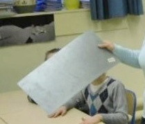 | 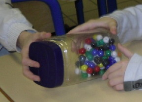 | 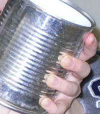 |
objectif 2 fabriquer un engrenage
il faut mettre au point la définition: qu'est-ce qu'un engrenage?
Ceux sont des roues dentées qui s'emboitent, une roue fait tourner d'autres roues. Des roues empilées ne sont pas un engrenage!
| 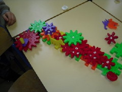 | 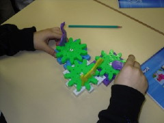 | 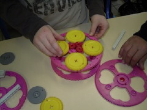 | 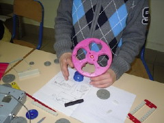 |
objectif 3 réaliser un schéma de l'engrenage obtenu. Préciser la différence entre un dessin et un schéma
observer, dessiner, schématiser, expliquer (travail par groupe de 4)
deuxième animation avec Sabine Deroubaix le 1-04-2010
On visionne la maquette du DVD vidéo en cours d'élaboration pour relancer le projet.

On construit par groupe de 4 avec ou sans plan: un moulinet (avec plan), une éolienne, un jeu électronique (sans plan)
et une construction libre...
On schématise son travail dans le cahier de sciences.
On justifie ses choix et on précise les principes utilisés.
On met au point tous ensemble le résumé à copier sur la notion de dessin et de schéma.
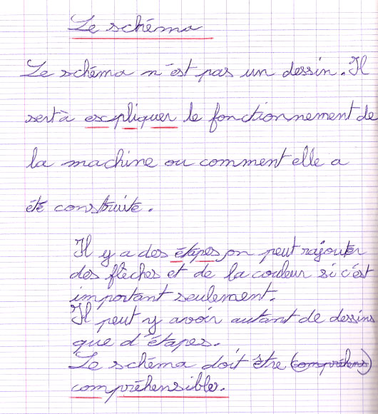
On rend compte des machines retenues pour le projet.
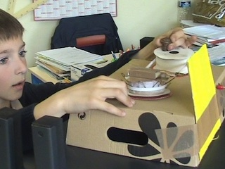 |
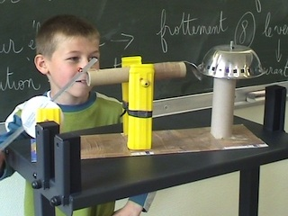 | |
vibration et frottement |
percussion |
|
| 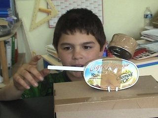 | 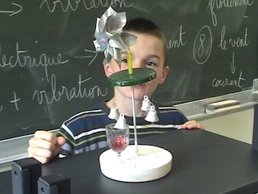 | |
vibration |
percussion |
|
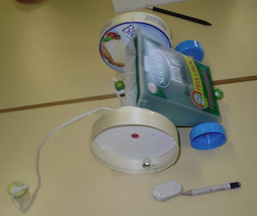
percussion et vibration
mise au point du DVD-vidéo du projet
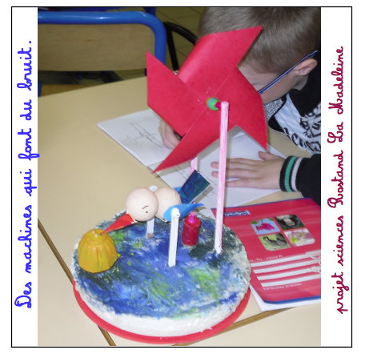
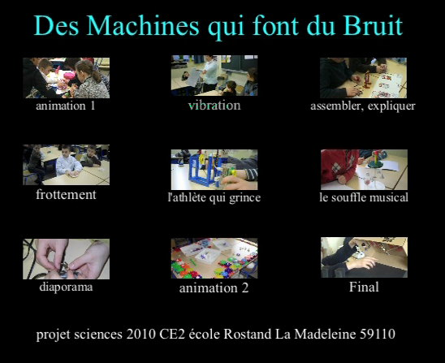
d'autres liens:
un artiste qui fabrique des machines sonores:
Les machines sonores du site de la main à la pâte
des animations sur le mouvement